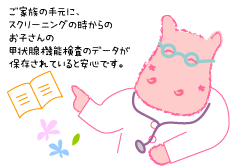

|
Lesson23 : 主治医に確認しておきたいチェックリスト
23-1 チェックリスト
主治医から説明を受けているか？きちんとその説明を把握しているか？を確認するためのチェックリストです。
ぜひ、参考にしてください。
- お子さんが、生涯治療を必要とする「先天性永続性甲状腺機能低下症（クレチン症）」かどうかが、確定していますか？
- 確定している場合、「欠損性」「異所性」「ホルモン合成障害」といった「クレチン症」の病型は説明されていますか？
- 確定していない場合、「クレチン症」の疑いが強いのなら、いつ「病型診断」のための入院検査をすることになっていますか？
- 「クレチン症」より「一過性甲状腺機能低下症」の疑いがある、という場合なら、いつその区別のための検査をするのでしょうか？
- 「一過性甲状腺機能低下症」が疑われるなら、いつまで治療を続けるのでしょうか？
- 「クレチン症」として治療を続ける場合、合併症の検査として、最近は聴力検査も勧められています。その予定がありますか？
- 治療が十分だったかどうかを確認するため、知能検査をすることも勧められています。その予定がありますか？
- 治療薬のレボチロキシンナトリウム（商品名：チラーヂンＳ）は、１日１回朝食前に服用するのが効果的です。豆乳などと一緒に飲むと、吸収が悪くなります。そうしたことは説明されていますか？
- 急性胃腸炎などのようなお腹の風邪のため嘔吐・下痢がひどくなり、チラーヂンＳが飲めなくなった時の注意を受けていますか？
- 小児慢性特定疾患の申請について説明を受けていますか？
- 甲状腺機能検査などのデータの説明をきちんとうけて、毎回データを教えてもらっていますか？ スクリーニングの時からの記録が手元にありますか？
- 現在のお子さんの、チラーヂンＳの投与量を知っていますか？
- お子さんの身長の伸び、体重の増え方に問題はありませんか？
- 小児内分泌専門医による診療を、一度は受けていますか？
|
担当の先生（主治医）が替わったり、あるいは転居などで病院自体を変えることも、長い間にはきっとあります。病院のカルテの保存期間は入院カルテは５年間ですし、外来カルテは毎年作り変えられることがよくあります。いつのまにか、データがなくなってしまうかもしれません。
その意味で、ご家族の手元に、スクリーニングの時からのお子さんの甲状腺機能検査のデータが、保存されていることが必要です。
「情報公開」が世の中の流れとなって、カルテの公開も以前に比べて容易になってきています。医療記録（カルテ）そのものを複写してもらう必要は、必ずしもありませんが、データだけはきちんともらっておきましょう。 |
 |